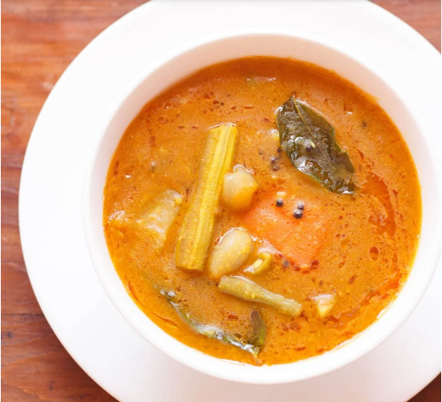

Sambar

Sambar is a traditional South Indian lentil stew that is loved for its rich flavors and versatility. It is made
by combining cooked lentils with a medley of vegetables like brinjal, carrots, beans, and tomatoes. The dish is
flavored with a blend of aromatic spices and tamarind pulp, giving it a tangy and slightly sour taste. Sambar is
often enjoyed with steamed rice or as an accompaniment to dosa and idli. Its comforting and nutritious qualities
make it a popular choice in South Indian cuisine, providing a satisfying and wholesome meal option.
Ingredients
- Tuvar dal (Pigeon pea lentils) - 1/2 cup
- Tamarind pulp - 2 tablespoons
- Sambar powder - 2 tablespoons
- Turmeric powder - 1/2 teaspoon
- Asafoetida (hing) - 1/4 teaspoon
- Curry leaves - a few
- Mustard seeds - 1/2 teaspoon
- Cumin seeds - 1/2 teaspoon
- Coriander leaves - for garnishing
- Salt - to taste
- Water - as needed
Steps
- Wash the tuvar dal (pigeon pea lentils) thoroughly and pressure cook it with 1 ½ cups of water until it
becomes soft and mushy. Set it aside.
- Soak the tamarind in warm water for about 10 minutes, then extract the pulp and set it aside.
- Heat oil in a large pan or a pressure cooker. Add mustard seeds and cumin seeds. Allow them to splutter.
- Add chopped onions and sauté until they turn translucent.
- Add chopped tomatoes and green chillies. Cook until the tomatoes become soft.
- Now, add the chopped brinjal, carrot, beans, and cucumber to the pan. Stir well.
- Add sambar powder, turmeric powder, and asafoetida (hing). Mix everything together.
- Add the tamarind pulp and mix well. Cook for a few minutes.
- Add the cooked tuvar dal (pigeon pea lentils) to the pan. Stir well and add water to adjust the consistency.
- Add salt to taste and curry leaves. Mix everything together.
- If using a pressure cooker, close the lid and cook for 2-3 whistles. If using a regular pan, cover and
simmer until the vegetables are cooked and the flavors meld together.
- Once the sambar is cooked, garnish it with freshly chopped coriander leaves.